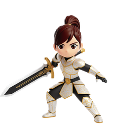

Choose Your Path
At level 10, choose one of five specializations. Each class offers a unique playstyle.

Swordsman
Weapon Sword + Shield
Role Frontline Tank
Defense and survivability. Shield provides defense and dodge bonuses. Wide melee arcs and the ability to stand your ground.

Assassin
Weapon Dual Daggers
Role Burst DPS
Speed and critical hits. Dual-wielding increases attack speed and crit chance. High risk, high reward gameplay.

Ranger
Weapon Bow + Quiver
Role Ranged DPS
Accuracy and range. Quiver boosts accuracy and extends effective range. Excels at kiting and area-of-effect damage.

Cleric
Weapon Staff + Orb
Role Healer / Mage
Magic and sustain. Orb boosts MP regen and magic damage. The only class with healing abilities.

Warrior
Weapon Two-Handed Greatsword
Role Berserker
The heaviest single hits in the game. A greatsword takes both hands, so a Warrior never carries an off-hand — the weapon hits harder to make up for it, and holds two kinds of gem where others hold one.